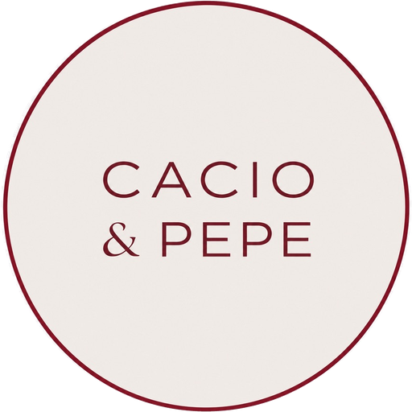

← Voltar ao cardápioPolítica de Privacidade
Atualizado em 17 de novembro de 2026
A Cacio & Pepe faz paninis artesanais por encomenda em Campinas/SP. Esta política explica quais dados pessoais usamos quando você faz um pedido em cacioepepe.netlify.app ou entra no Passaporte do panini (nosso cartão fidelidade), para que servem e quais são seus direitos, conforme a Lei Geral de Proteção de Dados (Lei 13.709/2018).
1. Quem cuida dos seus dados
A Cacio & Pepe, Campinas/SP, é a responsável pelos dados. Para qualquer assunto sobre privacidade, fale com a gente pelo e-mail cacioepepepanini@gmail.com ou pelo nosso WhatsApp.
2. Quais dados coletamos
- No pedido: nome, celular (WhatsApp), endereço de entrega, forma de pagamento, itens escolhidos e observações.
- No Passaporte do panini: nome e e-mail da sua conta (Google ou e-mail), foto de perfil quando você entra com o Google, e o celular, se você cadastrar.
- No pagamento online: quando você paga por link, os dados do cartão são digitados diretamente na página da InfinitePay. Nós não vemos nem guardamos número de cartão; recebemos só a confirmação de que o pagamento foi aprovado e o comprovante.
- No seu aparelho: o site guarda no próprio navegador o seu carrinho e os dados de entrega que você preencheu, para você não precisar digitar de novo. Não usamos cookies de propaganda nem ferramentas de rastreamento.
3. Para que usamos
- Preparar, entregar e confirmar o seu pedido e falar com você sobre ele pelo WhatsApp.
- Calcular a taxa de entrega a partir do endereço.
- Registrar pagamentos e manter o controle financeiro da loja.
- Dar carimbos e prêmios do Passaporte do panini.
Não vendemos seus dados e não enviamos propaganda sem você pedir.
4. Com quem compartilhamos
Só com os serviços necessários para o site funcionar:
- Supabase: banco de dados e login, onde ficam os pedidos e o passaporte.
- Netlify: hospedagem do site.
- Google: login, se você escolher entrar com o Google.
- InfinitePay: pagamentos por link (cartão e Pix).
- WhatsApp: quando você envia o pedido ou a gente fala com você.
- ViaCEP e OpenStreetMap: para achar o endereço pelo CEP e calcular a distância da entrega.
- Entregadores (por exemplo, Uber Moto): recebem só o nome, o telefone e o endereço necessários para a entrega.
5. Por quanto tempo guardamos
Os pedidos ficam guardados enquanto forem necessários para atendimento, controle financeiro e obrigações legais. Os dados do passaporte ficam enquanto sua conta existir. Você pode pedir a exclusão a qualquer momento.
6. Seus direitos
Você pode pedir para ver, corrigir, levar para outro lugar ou apagar seus dados, e saber com quem eles foram compartilhados. Para excluir sua conta do passaporte e seus dados, mande um e-mail para cacioepepepanini@gmail.com. Respondemos em até 15 dias.
7. Segurança
O site usa conexão segura (HTTPS), e o acesso aos pedidos é restrito à equipe da Cacio & Pepe, com login próprio.
8. Mudanças nesta política
Se mudarmos algo importante, avisamos aqui com a nova data de atualização.